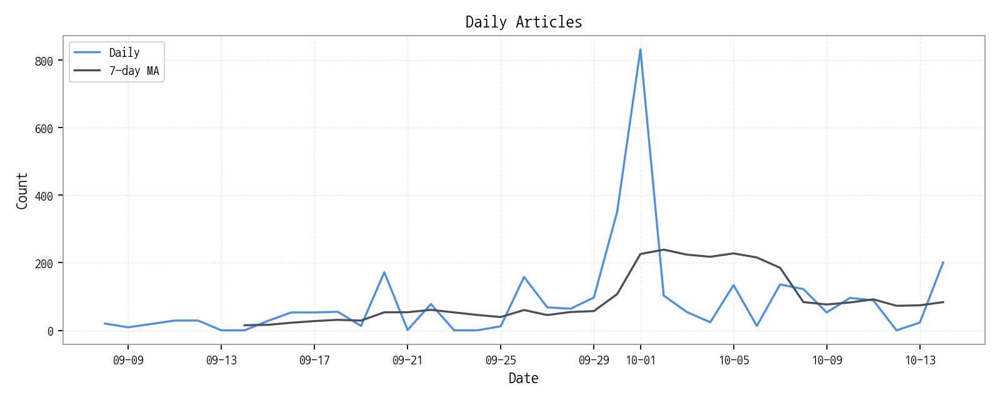
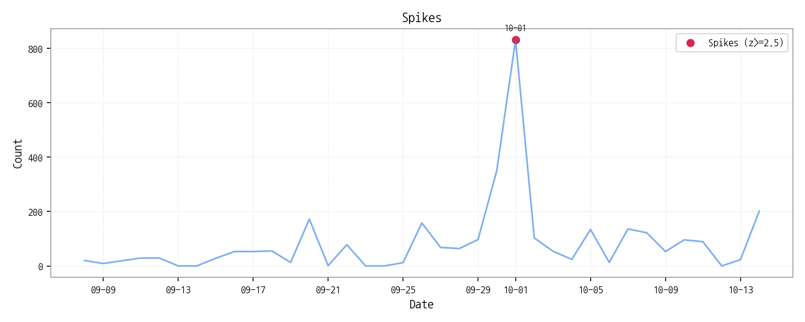

일별 기사 수와 7일 이동평균, 통계적 이상치(Spike)를 통해 시장의 양적 변화를 확인합니다. 

| date | count | z |
|---|---|---|
| 2025-10-01 | 832 | 5.13953 |
| 모멘텀 토픽 | z_like 점수 | 금일 언급량 |
|---|---|---|
| 삼성전자 | 3.54 | 22 |
| 한화 | 3.31 | 8 |
| 차세대 | 2.15 | 5 |
| 날짜 | 유형 | 제목 |
|---|---|---|
| 2025-10-15 | LAUNCH | "슬림폰 경쟁 뜨겁다"…모토로라, 모토 X70 에어 공개 |
| 2025-10-15 | LAUNCH | 원플러스, 100W 충전 지원 7800mAh 배터리폰 출시하나 |
| 2025-10-15 | INVEST | 승부처는 ‘8.6세대 수율’… 韓中 OLED , 2026년 전환 경쟁 본격화 |
| 2025-10-15 | INVEST | "애플 역대 최고 3분기"…韓 부품업계 깜짝 실적 기대감 증폭 |
| 2025-10-15 | CERT,INVEST,ORDER | LG디스플레이, 차세대 OLED 용 전환투자 본격화 |
| 제목 |
|---|
| 삼성전자, ‘프로젝트 무한’ 22일 공개…AI 결합한 차세대 XR 헤드셋 출... |
| 작지만 강한 칩…사피엔반도체, 차세대 디스플레이 숨은 주역 |
| "애플 비전 프로 비켜"…카운트다운 '삼성 XR 무한' 괴물스펙 '역습' 통... |